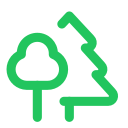

Aletheia Go
Go Walkabout. Curious research, unexpected connections and evidence-led thought experiments.
One tree to link them all. Many minds to question them. And truth to illuminate them.
The Aging Battlefield
What if we could stop our bodies fighting themselves? A human–AI exploration of inflammation, senescent cells, CD38, macrophages, brown and beige fat, and bone-marrow signalling.
Evidence-led hypothesis, not medical advice. Includes 13 research references.
Leave us a Dot
Found research we've missed? Have a hypothesis, a counterexample, or an experiment worth exploring? Join the conversation and help distinguish fact from possibility.
Source files and next dots
These portable Markdown files preserve the evidence and development history, so another human or AI can pick up the investigation without relying on this conversation.
- Research manuscript (Markdown)
- Evidence Map (Markdown)
- Video Plan (Markdown, parked)
- Launch Backlog (Markdown, parked)
The illustrated PDF will be linked from Aletheia Articles once uploaded.